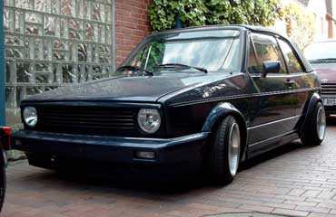

Extras
- metallic Lackierung
- voll lackierte Stoßstangen
- Kotflügel Verbreiterungen & Seitenschweller
- Servolenkung
- getönte Scheiben
- Sportsitze
- MFA
Motor
- 4 Zylinder / 1781 ccm / 72 kW (98 PS)
Abgasanlage
- Serie bis ESD von Supersprint
Bremse
- Serie (vorne innenbelüftet)
Felgen / Reifen
- Borbet T 8 x 14 VA ET 20 HA ET 0
- Uniroyal RainSport1 195 / 45 - 14
Fahrwerk
- Bilstein Gewinde B14
- HA Spurplatten 15mm je Seite
- Wiechers Domstrebe
Sonstige Umbauten
Außen
- schwarze Rückscheinwerfer
- weiße Blinker vorne
- Grillspioler
- Grill ohne Emblem
- Golf III GTI / VR6 Spoiler
Innen
- MB SLK Schaltknauf
- Mittelarmlehne
Musikanlage
- Sony CDX-4150
- Ratho SX-7000 Endstufe
- Frontsystem
- 3-Wege System in der Hutablage
- Gehäuse Woofer
Kontakt
andre@vwclubms.de